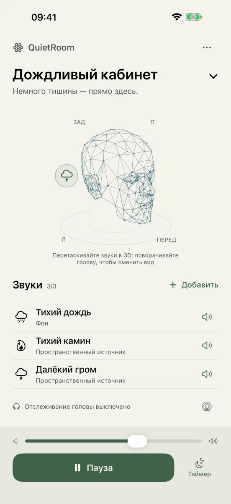
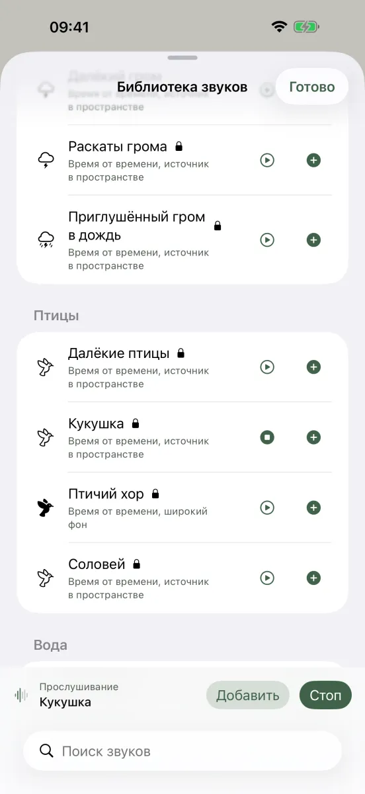
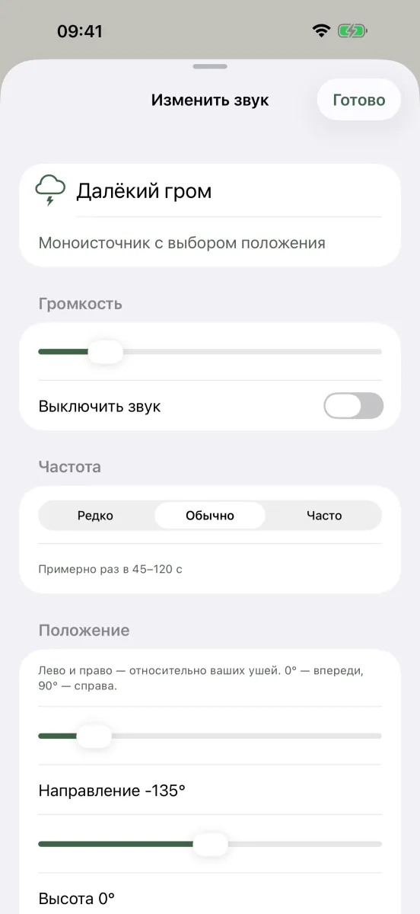
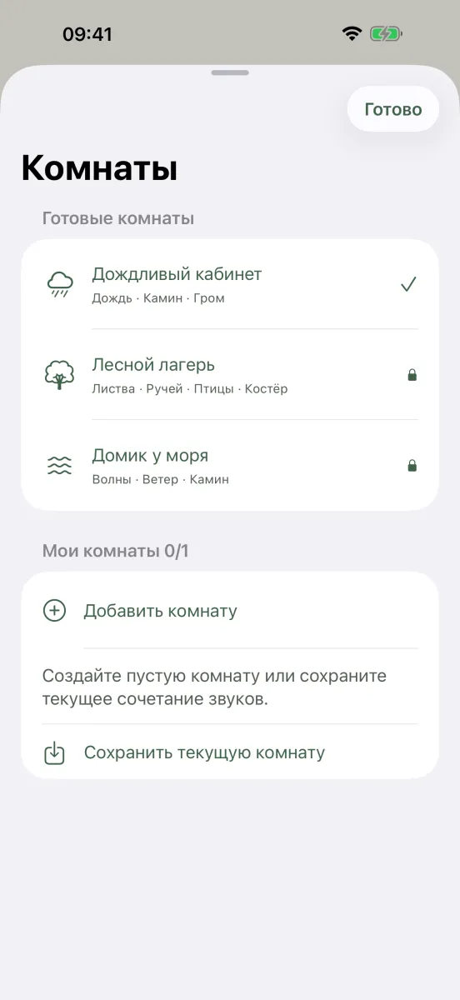

Звуки в настоящем пространстве
Перетаскивайте каждый звук вокруг 3D-слушателя: влево или вправо, вперёд или назад, вверх или вниз. Или точно задайте направление, высоту и расстояние. Широкий фон остаётся на месте вокруг вас.
Для iPhone · iOS 18 и новее
QuietRoom располагает звуки природы вокруг вас: дождь стучит в окно слева, впереди журчит ручей, за спиной потрескивает огонь. Наденьте наушники, начните слушать и настраивайте комнату, пока она не станет такой, как нужно.

Перетаскивайте каждый звук вокруг 3D-слушателя: влево или вправо, вперёд или назад, вверх или вниз. Или точно задайте направление, высоту и расстояние. Широкий фон остаётся на месте вокруг вас.
Дождь, гром, птицы, ручьи, волны, ветер, насекомые, шаги и огонь. Записи естественно меняются, поэтому комната не звучит как короткая петля. Любой звук, включая звуки Pro, можно прослушать перед добавлением.
Гром, пение птиц, капли и шаги появляются время от времени. Для каждого можно выбрать «Редко», «Обычно» или «Часто». Шаги также могут звучать как непрерывная прогулка.
Начните с «Дождливого кабинета», «Лесного лагеря» или «Домика у моря» либо с пустой комнаты. Изменения сохраняются автоматически; сохранённые комнаты можно в любой момент переименовать, дублировать или заменить.
С совместимыми наушниками пространственные звуки остаются на месте, когда вы поворачиваете голову. Обычные наушники дают фиксированный пространственный звук.
Без учётной записи, рекламы и аналитики. Звуки встроены в приложение, поэтому слушать, редактировать и сохранять можно без сети. Таймер сна плавно приглушает звук.



Разовая покупка · без подписки
Цена для вашего региона указана в App Store.